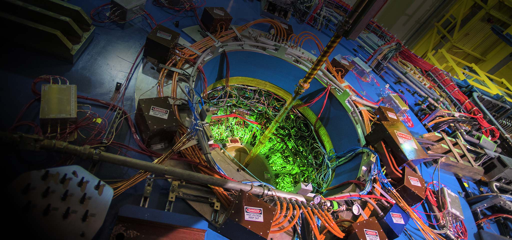

Upton, New York

Located in Upton, New York.
At Brookhaven, the scientists try to understand the “glue” that binds the building blocks of matter. More explicitly, they try to understand quarks and gluons, and the many-body dynamics of quarks and gluons in hadrons and nuclei at high energy. Gluons are massless particles that generate a “glue” like force field of the strong nuclear force that holds quarks together. They do this with the Relativistic Heavy Ion Collider (RHIC), which collides gold nuclei of gold atoms together at almost the speed of light. This allows scientists to study the fundamental properties of the basic building blocks of matter and learn how they behaved 15 to 20 billion years ago, when the universe was barely a split-second old.
What are the fundamental properties of the basic building blocks and matter?
Fundamental physics / quarks and gluons: RHIC operates at extreme energy scales that probe the interior of nucleons, to the level of quarks and gluons. Their research studies how quarks and gluons interact, and how they make up the matter in the universe.
4 trillion degrees Celsius: the peak temperature recorded when gold-gold collisions occur. This is 250,000 times hotter than the center of the sun, and hot enough to “melt” nucleons into quarks and gluons.
Sources:
https://www.bnl.gov/science/nuclear-physics.php
https://www.bnl.gov/physics/ntg/
https://www.bnl.gov/rhic/quark-matter.php
https://www.bnl.gov/rhic/new-physics.php